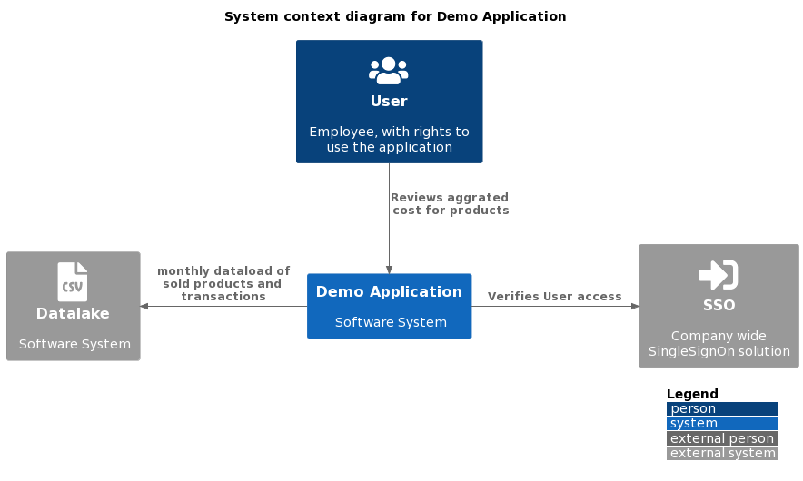

System Scope and Context
This chapter describes the environment and context of <the solution>. It uses the C4 model context diagram notation.
Data for the various aspects of the application is loaded on a monthly basis into the application and made available the business to perform analyses of their respective production chains.
For the data sources used, see [data sources] TODO.
Users will need to get authorization from the company SSO system before using the application. See [roles and rights] TODO
The system context diagram describes how the systems fits in the wider IT landscape and what other surrounding systems it interacts with. .System Context Diagram of the Demo application

Figure 1. Container Diagram of the Demo application